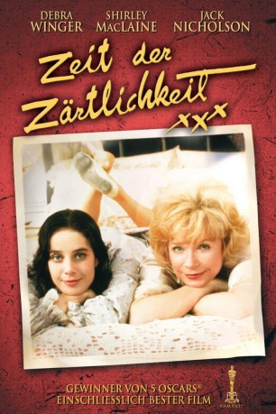
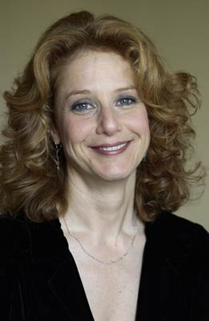
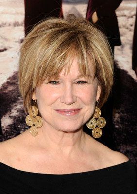

#3682 Zeit der Zärtlichkeit
Alternativ: Terms of Endearment
Auszeichnungen: 5 Oscars gewonnen für 6 Oscars nominiert 4 GoldenGlobes gewonnen
 
 IMDB-Wertung: 7.4 / 10
IMDB-Wertung: 7.4 / 10  Metascore: 0
Metascore: 0 
Seit dem Tod ihres Mannes besteht das Leben von Aurora Greenway (Shirley MacLaine) nur noch aus der Beziehung zu ihrer Tochter Emma (Debra Winger). Die beiden sind wie dicke Freundinnen. Doch je älter Emma wird, desto komplizierter wird die Beziehung zwischen Mutter und Tochter. Als Emma heiratet und Aurora mit dem Schwiegersohn nicht einverstanden ist, kommt es zum Bruch. Während Emma eine Familie gründet und dickköpfig in die Ehekrise schliddert, steht Aurora mit einem Mal alleine da. Völlig alleingelassen, kommt sie ihrem Nachbarn Garett (Jack Nicholson) näher. Aber das Schicksal schlägt zu und die Mutter wird wieder mit dem Tod konfrontiert...
Jahr: 1983
Dauer: 131 Minuten
FSK: 12
Land: USA Studio: ParamountTonspuren: DD5.1 - ,
Untertitel:
Auflösung: 1080p (1920x1080) Größe: 10076 MB
Genre: Drama, Komödie
Regisseur:  James L. Brooks
James L. Brooks
Drehbuch: Cary Joji Fukunaga
Soundtrack:
Darsteller:
 Shirley MacLaine als Aurora Greenway
Shirley MacLaine als Aurora Greenway-  Debra Winger als Emma Horton
 Jack Nicholson als Garrett Breedlove
Jack Nicholson als Garrett Breedlove Danny DeVito als Vernon Dahlart
Danny DeVito als Vernon Dahlart Jeff Daniels als Flap Horton
Jeff Daniels als Flap Horton John Lithgow als Sam Burns
John Lithgow als Sam Burns- Lisa Hart Carroll als Patsy Clark
- Huckleberry Fox als Teddy Horton
- Troy Bishop als Tommy Horton
 F. William Parker als Doctor
F. William Parker als Doctor David Wohl als Phil
David Wohl als Phil- Sharisse Baker-Bernard als Lee Anne
 Albert Brooks als Rudyard
Albert Brooks als Rudyard-  Mary Kay Place als Doris
- Peg Sheldrick als Hospital Patient , uncredited
- Betty King als Rosie Dunlop
- Shane Serwin als Younger Tommy Horton
- Megan Morris als Melanie Horton
- Tara Yeakey als Baby Melanie
- Norman Bennett als Edward Johnson
- Jennifer Josey als Young Emma
- Kate Charleson als Janice
- Tom Wees als Dr. Budge
- Paul Menzel als Dr. Maise
- Amanda Watkins als Meg
- Buddy Gilbert als Dr. Ratcher
- Shelley K. Nielsen als Nurse
- Bette Croissant als Nurse
- Charles Beall als Rudyard's Employer
- Lelise Folse als Doris
- Judy Dickerson als Checkout Girl
- Devon O'Brien als Lizbeth
- Dana Vance als Victoria
- Alexandra O'Karma als Jane
- Nancy Mette als Woman at Party
- Holly Holmberg Brooks als T.J.
- Lear Levin als Jack Stern
- Lanier Whilden als Patsy's Mother
- Helen Stauffer als Flap's Secretary
- Barbara Balik als Woman
- Michelle Watkins als Woman
- John C. Conger als Moving Man
- Sandra Newkirk als Mrs. Johnson
- Elaine McGown als Elaine McGown
Datei: X:\1983\Zeit der Zärtlichkeit (1983, FSK12, 1920x1080).mkv seit 20.05.2016
Festplatte: HD 1980-1986
 Es gibt insgesamt 35 Filme in der Gruppe '1983'
Es gibt insgesamt 35 Filme in der Gruppe '1983'